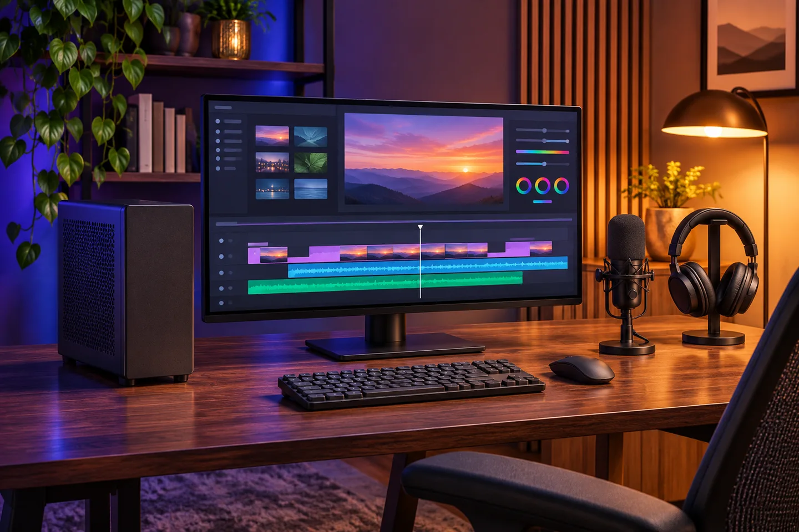

Monte seu primeiro PC sem medo.
Entenda o que cada peça faz e escolha o que você precisa para jogar, estudar, trabalhar ou criar conteúdo.
Começar a montar
Escolha uma peça para ver o estoque.
O que cada peça faz?
-
Processador
É o cérebro do PC. Segue as instruções dos programas e coordena o trabalho das outras peças.
-
Memória RAM
É a mesa de trabalho. Mantém à mão os arquivos e dados que você está usando naquele momento.
-
SSD
É o armário. Guarda jogos, programas e arquivos mesmo depois que você desliga o computador.
-
Placa de vídeo
É a artista do PC. Desenha as imagens que aparecem no monitor, como os cenários de um jogo.
-
Fonte
É como o coração. Distribui a energia da tomada para todas as peças do computador.
Setups montados pela comunidade

Setup para jogar
Monitor central e espaço livre para movimentar o mouse.

Setup para estudar
Uma luminária e uma área para o caderno ajudam na hora de ler e fazer anotações.

Setup para criar conteúdo
Uma tela ampla ajuda na edição. Microfone e fones ficam à mão para gravar e revisar o áudio.
Imagens ilustrativas geradas com OpenAI ImageGen.